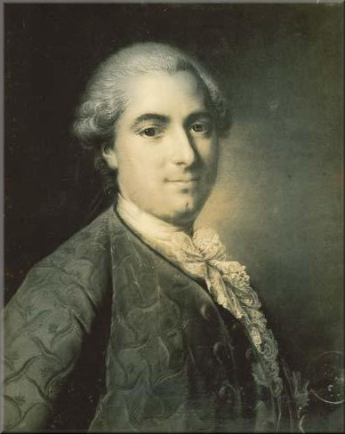

|
Il s'appelle, tout bonnement, Louis-Joseph marquis de Montcalm, seigneur de
Saint-Véran, de Candiac, de Tournemine, de Vestric, de Saint-Julien et d'Arpaon,
et baron de Gabriac. Il est né au château de Candiac, près de Nîmes, le 28 février
1712, dans une famille de la noblesse d'épée. Pour ses neuf ans, on le nomme
enseigne dans le régiment de Hainaut.  Avant même sa majorité, sa famille lui achète le job de capitaine du même régiment. Notre homme est né avec une épée d'argent entre les dents. Faute de mieux, il est nommé à la tête des armées françaises en Nouvelle-France. Durant toute sa courte aventure en Amérique, Montcalm nourrit une profonde antipathie pour tout ce qui est canadien. Cette aversion viscérale se cristallise sur la personne du gouverneur Vaudreuil, né au Canada. Dès sa nomination, il intrigue pour retourner chez lui au plus sacrant. Le destin en décide autrement. Une balle perdue lors de la désastreuse bataille des plaines d'Abraham met fin à une carrière toute tracée d'avance. La Nouvelle-France est en grave danger en cette année 1756. C'est la guerre totale avec l'Angleterre. La fragile colonie française aurait besoin d'un foudre de guerre. Celui qu'elle voit arriver, en compagnie du chevalier de Lévis, du colonel Bourlamaque et de l'aide de camp Bougainville, à la tête de 450 soldats des régiments de la Sarre et du Royal-Roussillon, a l'air de tout sauf d'un grand capitaine. Au physique, Montcalm est petit, grassouillet et mal embouché. Ses qualités morales n'arrangent rien. Le gouverneur Vaudreuil le jugera rapidement: vaniteux, criticailleux et tête de cochon ; il passe plus de temps à intriguer dans le dos de tout le monde qu'à faire son métier de soldat. Quand la petite armée française arrive, début mai 1756, dans le port de Québec, son commandant n'est pas à bord. Le marquis de Montcalm n'a pas le pied marin. Pressé de retrouver le plancher des vaches, il s'est fait débarquer au cap Tourmente. Il se rend par terre à Québec où il arrive le 13 mai. Une semaine plus tard, il se fait porter à Montréal par chaise. Ces culs-terreux de Canadiens et leurs alliés indiens vont voir ce qu'ils vont voir. Il va leur montrer comment on fait la guerre en Europe. Vaudreuil accueille Montcalm amicalement. Le gouverneur de la Nouvelle-France est le supérieur hiérarchique du commandant des troupes françaises. La commission de Montcalm est très claire à ce sujet. Le roi veut éviter les querelles de préséance qui ont tellement nui à l'efficacité française en Amérique par le passé. La responsabilité de Montcalm se limite à la discipline, à l'administration et à l'ordonnance interne des bataillons. Il commande uniquement sur le terrain des opérations militaires. Il prend ses ordres de Vaudreuil. La gaffe de Fort Edward Au début de l'année 1757, Vaudreuil vise les positions anglaises au sud du lac Champlain. Leur destruction bloquerait l'attaque massive par terre prévue. Montcalm réunit à Carillon 6200 soldats, réguliers et miliciens, en plus de 1800 Indiens. Les instructions de Vaudreuil sont de détruire le fort William Henry, à l'extrémité sud du lac Saint-Sacrement (lac George, N.Y.), puis de raser le fort Edward, situé à 16 milles plus au sud. Après trois jours de combats, le commandant du fort William Henry, George Monro, et ses 2500 hommes se rendent. Au lieu de profiter de son avantage et d'attaquer le fort Edward, selon les instructions, Montcalm, qui se croit encore en Europe, joue les grands seigneurs et perd un temps fou à rendre les honneurs de la guerre à la garnison vaincue. Tellement qu'il en oublie le fort Edward. Le gouverneur Vaudreuil est furieux. Le moral des Anglais était au plus bas. La panique guettait la population de New York. Le fort Edward, la porte de la ville d'Albany, n'était qu'à un jour de marche de William Henry. Montcalm a perdu une occasion en or de mettre les Anglais à genoux dans cette région stratégique. En 1758, l'action se déplace de nouveau vers le lac Champlain. Montcalm y signe la victoire dont il sera le plus fier. Le major général James Abercromby masse dans cette zone la plus grosse armée jamais réunie en Amérique du Nord, soit 15 000 soldats. Vaudreuil ordonne à Montcalm de fortifier le fort Carillon (Ticonderoga) et d'y stopper l'expédition d'Abercromby. Montcalm, selon son habitude, veut n'en faire qu'à sa tête. Il songe même à brûler Carillon et à se replier sur le fort Saint-Frederic (Crown Point, N.Y.). Son état-major le persuade finalement de livrer combat à Carillon. Montcalm est servi par la chance. L'armée anglaise subit un retard inespéré. Lévis a le temps d'arriver en renfort avec 400 Canadiens, réguliers et miliciens. Montcalm peut compter sur une armée de 3600 hommes et il attend les Anglais sur son propre terrain. Abercromby commet une série d'erreurs coûteuses. Il croit à tort que Montcalm est sur le point de recevoir un renfort de 3000 hommes. Il attaque la position française sans l'appui de son artillerie. Montcalm avait laissé des trous béants dans sa défense. Trop anxieux d'en finir, Abercromby ne voit pas ces failles pourtant évidentes. La bataille de Carillon dure de midi à 19 h, le 8 juillet. À la fin de la journée, mal dirigées, fatiguées, décimées, les troupes anglaises se débandent. Elles laissent sur place armes, munitions et blessés. Les Anglais ont perdu 1944 hommes. Les Français déplorent 377 morts et blessés. Montcalm exulte. Son rapport au ministre de la Guerre est délirant. Il affirme avoir vaincu une armée de 30 000 hommes. Il évalue les pertes anglaises à 5000. Il prend tout le crédit de la victoire. Il loue en public le travail des soldats canadiens, mais, en secret, il expédie un message codé, à Paris, dans lequel il accuse les Canadiens de lâcheté devant l'ennemi. Il laisse entendre que Vaudreuil ne lui a pas apporté toute l'aide nécessaire. Grâce à son génie militaire, il a transformé une défaite probable en victoire retentissante, dit-il. La victoire de Carillon, ajoutée au fait que Louisbourg résiste toujours, a épargné au Canada une attaque en règle dès 1758. Les historiens précisent que Carillon n'aura finalement que retardé l'échéance fatale. Dès l'année suivante, les Anglais seront devant Québec. Un homme impossible Montcalm ne manquait pas de courage. Les cinq blessures reçues sur les champs de bataille européens durant la guerre de Succession d'Autriche en témoignent. Au Canada, le bilan est rien de moins que catastrophique. S'il n'avait pas eu la bonne idée de mourir sur les plaines d'Abraham, les bons historiens disent qu'il aurait été traduit devant le conseil de guerre, dès son retour en France. En son absence, c'est ce pauvre Vaudreuil qui prendra le blâme. Il est impossible de trouver à cet homme un seul côté attachant. L'intrigue lui sert de stratégie militaire. La médisance et la calomnie s'attachent à chacun de ses pas. Il n'est pas le seul Français à souffrir de cette incapacité d'adaptation au Nouveau Monde. De nombreux fils de famille, habillés en militaires, en administrateurs coloniaux ou en missionnaires, sont rapatriés discrètement chez eux. Le Canada en a rendu fou plus d'un. Dès son arrivée à Québec, Montcalm commence à trahir le gouverneur dont il convoite le poste, tout en rêvant à un retour rapide en France. Dans les premiers rapports à d'Argenson, il accuse Vaudreuil de ne s'intéresser qu'aux coloniaux. En somme, il lui reproche le fait d'être né ici et de s'être attaché au pays. Après la victoire de Vaudreuil à Chouaguen, il écrit au ministre de la Marine, Machault, pour critiquer ses tactiques militaires. Il l'accuse de pratiquer la « petite guerre» , c'est-à-dire la guerre de harcèlement. C'est pourtant cette façon de se battre, apprise des Indiens, qui a permis aux Français de la colonie de tenir si longtemps devant les Anglais installés au sud et tellement supérieurs en nombre. Montcalm est aveugle et sourd à tout ce qui n'appartient pas à son propre monde. Après la demi-victoire du fort William Henry, Montcalm est fait commandeur de l'ordre de Saint-Louis. Il profite de cette distinction pour demander que, dans l'éventualité du décès de Vaudreuil, la charge de gouverneur général par intérim lui soit adjugée plutôt qu'au gouverneur de Montréal, comme c'est l'usage ; il se trouve que le gouverneur de Montréal est le propre frère de Vaudreuil. Le salaire du déserteur Début 1758, Montcalm a déjà abandonné l'espoir de sauver la colonie française du Canada. Il écrit au ministre de la Marine des lettres d'un défaitisme maladif. Pour lui, les jeux sont faits. Les Anglais vont prendre le Canada sans coup férir. Il recommande d'organiser la capitulation avant même les batailles décisives. Il suggère le repli des troupes vers la Louisiane. Compte tenu de son poste, c'est presque de la désertion. D'autant plus qu'en même temps, il demande expressément son rappel en France. Il n'est pourtant ici que depuis deux ans. Alors, l'incroyable se produit. Non seulement sa demande de rappel n'est pas retenue mais on lui donne une promotion. Il est nommé lieutenant général, le deuxième degré dans la hiérarchie militaire française. Dorénavant, il est le supérieur de Vaudreuil et il commande toutes les forces militaires au Canada. La table est mise pour le grand désastre à venir. Après la mort du grand homme, sa veuve, la marquise de Montcalm, demande une compensation. Elle avance que son mari a payé de sa poche la solde de ses soldats. Le gouvernement lui doit de l'argent. Une enquête prouvera le contraire. Montcalm s'est enrichi durant son séjour au Canada. Les historiens se demandent encore aujourd'hui d'où proviennent les 80 000 livres que Montcalm a pu économiser, en trois ans, et placer en France. Sources: le dictionnaire biographique du Canada ; La guerre de la conquête, de Guy Frégault; le Boréal Express ; Histoire populaire du Québec, de Jacques Lacoursière. |